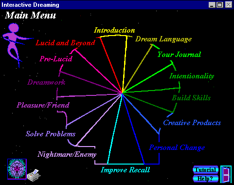
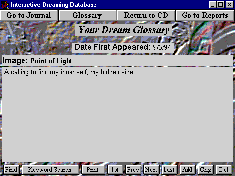
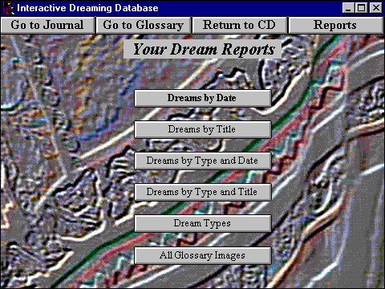
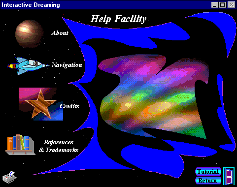

DNJ: What is intentional dreaming, and how does it differ from dream control?
ASK: Intentional dreaming is a specific method for inviting your dreams to help you in specific areas of your life. For example you can use it to learn new skills, solve problems or explore creative areas in which you're interested. Traditionally, dream control seeks to have dreams conform to the waking person's agenda, which can sometimes run right over the natural wisdom of dreaming. Intentional dreaming simply sets the general topic, then encourages the dreaming heart and mind to provide the content, plot, imagery, emotional tone, etc. You can use intentional dreaming to create a specific kind of dream, such as a flying dream or lucid dream, and perhaps even a topic within the dream type, but if you go beyond that to dictate the action and outcome, that's dream control.
DNJ: What is the distinction between intentional dreaming and dream incubation? Are they not synonymous terms?
ASK: Essentially the concept is the same, as it has been for millennia. Only the specifics of technique differ. For instance, I've developed some guidelines for developing intention statements that help make remembering and repeating them easier. And I've added the technique of repeating your intention all day long, rather than just before sleep. Also, I encourage other means of reinforcing an intention, such as posting visual images, meditation, doing activities related to the topic, etc. But all of these have the same bottom line: focus your mind on the desired area, then let go and let your dream wisdom flow.
DNJ: What makes a good dream intention statement vs. an ineffective one?
ASK: Intentional dreaming involves creating and repeating an intention statement, sort of as if it were a mantra, to program your mind. So you have to be able to remember it easily. That means it should be brief. Part of the technique is to repeat it many times as you fall asleep, and again many times each time you awaken during the night, to refocus your mind. In that state, it can be hard to remember a complex sentence. It's also more powerful if you put it in active voice. For example, "I want to confront my boss and tell him what I really think of him and force him to give me the raise I've been deserving for so long" is too long and too specific. "Tonight I face my boss in my dreams" is much better and doesn't verge on dream control. Or maybe, "Dreams, tell me about my relationship to my boss". You may find out other interesting things about yourself and your relation to the image of your boss, if you don't lock it into a specific agenda. In fact, "Tonight I face my 'enemies' in my dreams" may be even more powerful for most people, as it's generally applicable to many dreams, and it often creates strong positive impact on the waking life.
DNJ: What kinds of impact?
ASK: It's different for different people, but I've known a range of people who worked with this intention statement and had profound effects. I've personally developed more assertiveness in waking life, without that angry edge that causes contention. And it just seemed to happen naturally after one such dream. Three different friends, who hadn't known about the dream or the intention noticed the change in me and commented on it. In others, by asking the dream "enemy" what it wanted, they discovered that it only wanted to tell them that their life-style was causing a physical risk, or that if they'd just listen to their kids, they'd have a better relationship with them. Things like that. Most dream 'enemies' have a positive intent and want to help us in some way, if we'd only stop running and start hearing.
DNJ: Once you have a dream that seems to address your intention, what do you do then?
ASK: Work with it. If it's immediately clear what the dream is telling you, and it seems within safe limits, implement the suggestion. After all, it's coming from your own deep self. However, even if it's obvious, there may be other levels you don't see immediately. Dreamwork brings them out. I use a form of Gestalt dreamwork where the dreamer speaks in first person present tense as the image. That lets the various parts of the dreamer represented by the symbols have a voice. Since many of these parts are disowned or denied, it's very therapeutic to do this. And at the same time, it lets the dreamer hear things they'd never normally say about themselves.
DNJ: How do you know if a dream is responding to your intention?
ASK: Sometimes you just know intuitively. Sometimes it isn't clear at all. Usually I look for symbols and images that seem to relate to the topic. For example, when I started my group dreaming project at my website, the focus was to dream about the group itself. I had several dreams that week that involved groups of eggs, groups of other objects, meetings, and the like. I also look for repeating themes or images. They usually have a message to deliver, often related to my intention. Look for dreams that have an emotional tone you associate with your intention, as well. And finally, even if a dream seems to have nothing to do with the intention, working it will tell you fairly quickly if it does.
DNJ: Why does intentional dreaming work?
ASK: It's a natural way for the conscious and unconscious mind to work together. Remember times when you've been preoccupied with something during the day, and kept going over it in your mind? Sooner or later you start dreaming about it. So you can artificially create a "preoccupation" by repeating your dream intention statement all day long and as you fall asleep. It's like focusing diffused light into a laser to get a more powerful result. You can embellish the technique by posting images related to the topic or talking to people about the topic. Anything that keeps your mind on your intention increases the likelihood of it appearing in your dreams.
DNJ: What do you do if a dream intention doesn't work?
ASK: First, be patient. Remember it can take several days before you build up enough steam to get a result. But sometimes it doesn't work. And what to do depends on why it isn't working. If your life is already too intense in another direction, your unconscious may feel that you're trying to take it away from a task it feels is more important. In that case, drop your agenda and ask it for help in the area it feels you need insight instead. The dreaming mind is wise and strong, and won't be run over by a puny little conscious self! If you've made your intention statement too complex, or too controlling, simplify the statement. If your intention is really out of line with your inner integrity, your dream self can boycott your request. For example, if you ask it for creative ways to get around a situation you're not looking forward to, but that you really should deal with, intentional dreaming may not work. And finally, if you've asked for help or information that your unconscious just feels would not be good for you at this time, it will not give you dreams in that area. Basically, its a self-correcting system: it works when it's appropriate. If you're confused about which of these things may be happening, you can switch your intention to finding out... why? Or you can become quiet and meditate on it.
DNJ: How have you used this technique yourself?
ASK: Until a year ago, I used it informally and intuitively from time to time. I hadn't really created a technique, but I'd often go to bed asking for clarity on some topic. Then one night a year ago, I went to bed asking my dreams to tell me how to be of service. Bam, I was awakened at 2:00a.m. with the clear instruction: "Create a multimedia software program to teach people about dreams and let them do dreamwork and journaling online. Get up. Do it now!" I pulled the covers over my head, but my mind kept on me until I got up and prototyped the project. By morning I had the basic design of Interactive Dreaming, as I eventually called it. But the fascinating thing was that for the next year, I went to bed every night with a question or problem to solve about developing the project. And I every single night had a dream or awoke with a knowing of the answer. They were all kinds of questions, from content, to what graphics to use, to how to package it, to programming problems. I was amazed. I still am.

DNJ: What are other purposes for which intentional dreaming can be used?
ASK: Just about anything you can think of that fits within the scope of your own appropriate life expression. As I mentioned, improper use generally results in no dreams. But you can use it for all kinds of therapeutic work, self exploration, personal empowerment, and the like. It's great for taking risks and exploring things you can't or wouldn't in waking life, from radical sports to performance to other realms of being and dimensions. Its uses for building creativity are basically unlimited. You can invite your mind to provide personal experiences for you in any artistic field, from dance to sculpture to cooking1 or any "practical" creative field, such as invention or technical design. Perhaps the most powerful area is problem solving. You can focus your statement, open-endedly on a solution to a problem (not on the problem itself), and discover ways to look at it that you'd never have imagined in waking life. Often these come with insight into the structure of the problem, or the unconscious ways you're contributing to it. You can use it for physical diagnosis and healing as well - though I hasten to add the medical disclaimer: see a physician too. I'm sure there are many other uses, perhaps as many as there are dreamers.
DNJ: What do some of the answers that come through dreams look like?
ASK: Sometimes they're literal-like my instruction to create the Interactive Dreaming CD, or a dream in which you play through the scenario you've asked about and it lets you see the underlying dynamics and/or outcome. or; if you've taken on facing "enemies", for example, you'll know the answer when you actually face an "enemy" during a dream. More often, dream answers are symbolic and metaphoric. For example I once asked, "Dreams, how can I deal with my angry husband?" I dreamed that my husband was showering, and as soon as he turned on the water, my ceiling started dripping, then running, then gushing with water. Water often means emotions for me, and here I was springing a leak where there weren't even any pipes! I realized when I awoke that I was being told to clean up my co-dependent behavior. Just because he was upset was no reason for me to become upset. Examine your dreams for symbols that have qualities in common with your intention. For example, if you intend to dream on possible career changes, look for imagery that addresses change, perhaps coins (small change), roads, things that are morphing. Look also for the opposites, such as images of stuckness: perhaps mud, locked doors or chains. Each person's imagery is different, so your set of symbols for these qualities may be entirely different.

DNJ: What do you see as the overlap between lucid dreaming and intentional dreaming?
ASK: You can intend to dream lucidly: "Tonight I dream lucidly", for example. It's best to combine this with a dream test, or "reality test" as LaBerge calls it. I prefer dream test, because "reality test" implies that dreams aren't real, and I believe they are. You can also use the statement "I am lucid now, and ___ is happening" to stay lucid once you get there. You fill in the blank with whatever is happening in the dream, and keep on saying the statement. But beyond creating and maintaining a lucid experience, you can set an intention for what you'll do when you become lucid. What could you learn in the lucid state that would not be available to you in other states? You might want to try "Tonight I dream lucid and find my spiritual teacher" or perhaps discover unknown qualities about yourself. I had an extraordinary archetypal experience once by using, "Show me death" as my intention inside the lucid dream.

DNJ: Can intentional dreaming be used to create a group dreaming experience?
ASK: That's what we're experimenting with at my website. I'm sure it can be done, but have not tried it before myself. Each month we all use the same intention statement and graphic to focus on. We've only been at it two months now, and are still solidifying as a group. I think it will take several months of aligning ourselves in our dreams to begin having really strong results. I post the results each month at my site. I'd love to have more people involved.
DNJ: What is the connection between dreams and higher states of consciousness?
ASK: Many lucid dreams, spiritual and numinous dreams, some archetypal dreams and out-of-body experiences are themselves higher states of consciousness. Dreams are a natural, safe, legal way to access altered consciousness every night. Some dream are transcendent. When transcendent insight or inspiration comes to us in a dream, and not from meditation, for example, this does not make the experience less valuable or real. The proof is in the result. If a high dream changes your consciousness or gives you a radically altered, expanded or enlightened point of view that impacts your perspectives... how you feel or act in your life, it was a valid, viable transpersonal experience. The flip side of this is to invest these experiences with value. If you had an enlightenment experience after years of meditating, you'd never say, "it was just a meditation vision" and dismiss it, forget you even had it. Why then, after many years of dreaming does our culture say "it's just a dream" when a potentially life changing experience touches us through our dreams? Wise people of all ages and cultures have known better and have actively sought higher states of consciousness in their dreams. I believe that dreams can train us, just as meditation can, to become more available to transpersonal experiences: And intentional dreaming is one way to create a spiritual practice of dreaming.
